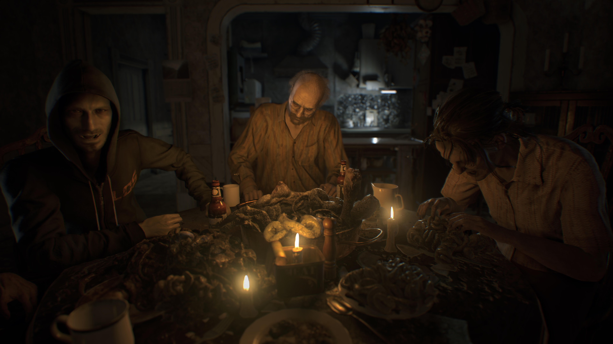

Resident Evil 7: Biohazard, conhecido no Japão como Biohazard 7: Resident Evil (バイオハザード7 レジデント イービル, Baiohazādo 7 Rejidento Ībiru?) é um jogo eletrônico do gênero survival horror produzido pela Capcom e lançado em 24 de janeiro de 2017 para Microsoft Windows, PlayStation 4 e Xbox One, com a versão de PlayStation 4 tendo suporte completo para PlayStation VR. O jogo é o décimo primeiro título principal da série Resident Evil, sendo o primeiro deles a usar perspectiva em primeira pessoa.
A história segue a busca do civil Ethan Winters por sua esposa Mia, que o leva a uma mansão agrícola aparentemente abandonada e habitada pela família Baker. Ethan faz uso de armas e ferramentas na luta contra os membros da família e os "Mofados", uma forma humanoide de bactéria. Itens de cura são usados em caso de lesão e há enigmas que precisam ser resolvidos para dar prosseguimento a história.
Resident Evil 7 foi anunciado durante a E3 2016 depois de vários rumores. Mais tarde naquele dia, uma demonstração intitulada Resident Evil 7 Teaser: Beginning Hour foi lançada na PlayStation Store para os assinantes da PlayStation Plus. Liderado por Koshi Nakanishi, diretor de Resident Evil: Revelations, a equipe de desenvolvimento foi composta por cerca de 120 pessoas. Em vez de ser centrado na ação como seus antecessores Resident Evil 5 e 6, os elementos de survival horror e a exploração tiveram prioridade no novo título. Para isso, o jogo utiliza uma perspectiva em primeira pessoa. Eles usaram o novo motor gráfico RE Engine, que já tinha sido testado na demonstração em realidade virtual KITCHEN na E3 de 2015.
Após o lançamento, o jogo recebeu avaliações geralmente favoráveis dos críticos, que elogiaram a jogabilidade, os gráficos e o design. A versão para PlayStation VR foi enaltecida por aumentar o envolvimento do jogador, mas também foi alvo de reclamações por ter a resolução diminuída e causar desconforto físico. Outras queixas foram dirigidas às batalhas contra chefes e ao capítulo final da história. Até o final de março de 2017, o jogo tinha vendido mais de três milhões e meio de cópias, sendo a terceira melhor estreia de um título da série.
